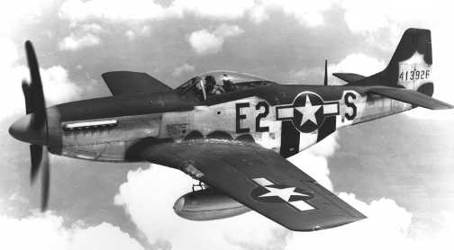

Vezba
Возбудливо 80 км долго патување под вода околу Охридското езеро-меѓународниот нуркачки инструктор Милутин Секулоски пренуркувајќи го најстарото езеро во Европа,во близина на албанскиот град Поградец ги направи првите фотографии од авион кој паднал во езерските води за време на втората светска војна.

,,Приказната за авионот датира одмна,ние не го откривме,бидејќи се знаше дека дното на Охридско крие остатоци од леталото, кое ние успеавме да документираме”-вели Секулоски.
- Можам да спомнам дека доста од жителите во Албанија кажуваа дека тој е германски авион, но напротив не станува збор за германски авион,станува збор за англиски авион. Значи по документирање на деловите на авионот видовме дека станува збор за англиски авион, но сепак кога ќе погледете под вода не гледате авион, туку само делови од тој авион, појаснува Секулоски
- Yahoo
- Google
- Moj profil
- Naselbi vo Karposh
- Kozle
- Kapishtec
- Nerezi
- Zdanec
- Trnodol
Jas